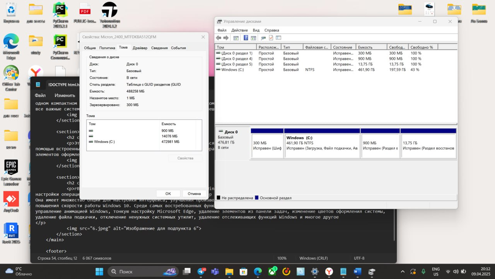

Выбор операционной системы для курсового проекта: Windows 11
Для выполнения курсовой работы я выбрала операционную систему Windows 11. При выборе я делала акцент на следующих факторах:
Выбор операционной системы для курсового проекта: Windows 11
Для выполнения курсовой работы я выбрала операционную систему Windows 11. При выборе я делала акцент на следующих факторах:
1)Поддержка новых технологий
2)Совместимость с приложениями
3)Безопасность и обновления
4)Поддержка виртуализации
По умолчанию операционная система Windows 11 использует файловую систему NTFS.
При установке Windows 11 диск форматируется с использованием схемы разметки GUID Partition Map (GPT), что позволяет создавать несколько разделов и использовать полный функционал современных компьютеров.
